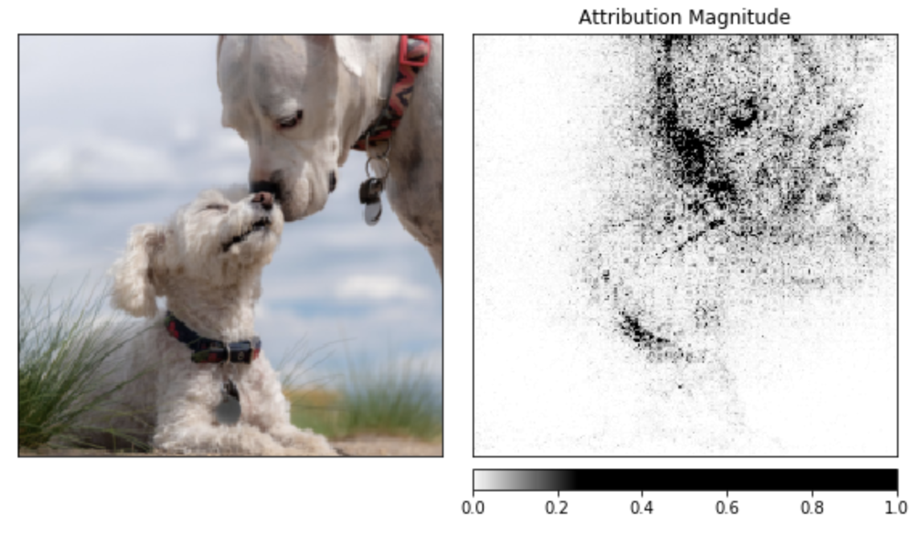

新版本: PyTorch 1.3 添加 mobile, privacy, quantization 和 named tensors
发布: 2019年10月10日
原文: PyTorch
翻译: ApacheCN
PyTorch继续获得动力，这是因为其专注于满足研究人员的需求，其简化的生产使用工作流程，并且最重要的是，由于它得到了AI社区的热情支持。正如O'Reilly所指出的那样，仅在2019年上半年，PyTorch在ArXiv上的引用就增长了194％ ，该平台的贡献者数量在去年增长了50％以上，达到近1200个。Facebook，Microsoft，Uber和其他行业的组织越来越多地将其用作最重要的机器学习（ML）研究和生产工作负载的基础。
我们现在通过PyTorch 1.3的发布进一步推进该平台的发展，该版本包括对功能的实验性支持，例如无缝模型到移动设备的部署，模型量化以在推理时获得更好的性能，以及前端改进（例如命名张量）并创建更清晰的代码，而不需要内联注释。我们还将启动许多其他工具和库，以支持模型的可解释性，并将多模式研究投入生产。
此外，我们还与Google和Salesforce合作，为Cloud Tensor处理单元增加了广泛的支持，为培训大型深度神经网络提供了显着加速的选择。阿里云还加入了Amazon Web Services，Microsoft Azure和Google Cloud，为PyTorch用户提供了受支持的云平台。您现在可以在pytorch.org 上开始使用。
PyTorch 1.3
PyTorch的1.3版本带来了重要的新功能，包括对移动设备部署的实验性支持，8位整数的快速模式量化以及张量命名能力。通过这些增强功能，我们期待PyTorch社区做出更多贡献和改进。
NAMED TENSORS（实验）
康奈尔大学的Sasha Rush认为，尽管在深度学习中无处不在，但传统的张量实现仍存在重大缺陷，例如暴露私有维度，基于绝对位置进行广播以及将类型信息保留在文档中。他提议将张量命名为替代方法。
今天，我们通过评论来命名和访问维度：
# Tensor[N, C, H, W]
images = torch.randn(32, 3, 56, 56)
images.sum(dim=1)
images.select(dim=1, index=0)
但是命名显式地导致了更具可读性和可维护性的代码：
NCHW = [‘N’, ‘C’, ‘H’, ‘W’]
images = torch.randn(32, 3, 56, 56, names=NCHW)
images.sum('C')
images.select('C', index=0)
QUANTIZATION（实验）
开发ML应用程序时，有效利用服务器端和设备上的计算资源非常重要。为了支持在服务器和边缘设备上进行更有效的部署，PyTorch 1.3现在使用熟悉的急切模式Python API支持8位模型量化。量化是指用于以降低的精度执行计算和存储的技术，例如8位整数。当前处于实验状态的功能包括对训练后量化，动态量化和量化感知训练的支持。它分别针对x86和ARM CPU 利用FBGEMM和QNNPACK最新的量化内核后端，这些后端与PyTorch集成在一起，并且现在共享一个通用API。
要了解有关设计和架构的更多信息，请在此处查看API文档，并使用此处提供的教程开始使用任何受支持的技术。
PYTORCH MOBILE（实验性）
随着应用程序继续要求更低的延迟，在边缘设备上运行ML的重要性越来越重要。它也是诸如联合学习之类的隐私保护技术的基础要素。为了实现更高效的设备上ML，PyTorch 1.3现在支持从Python到在iOS和Android上部署的端到端工作流程。
这是一个早期的实验版本，针对端到端开发进行了优化。即将发布的版本将侧重于：
- 大小优化：根据用户应用程序所需的运算符，构建级别的优化和选择性编译（即，仅为所需的运算符支付二进制大小）
- 性能：进一步改善了移动CPU和GPU的性能和覆盖范围
- 高级API：扩展移动本机API，以涵盖将ML集成到移动应用程序中所需的常规预处理和集成任务。例如计算机视觉和自然语言处理
在此处了解更多信息或开始使用Android或iOS 。
用于模型可解释性和隐私性的新工具
资本
随着模型变得越来越复杂，开发用于模型可解释性的新方法变得越来越重要。为了满足这种需求，我们正在启动Captum，该工具可帮助在PyTorch中工作的开发人员了解为什么他们的模型生成特定输出。Captum提供了先进的工具来了解特定神经元和层的重要性如何影响模型做出的预测。Captum的算法包括积分梯度，电导，SmoothGrad和VarGrad以及DeepLift。
下例显示了如何在预先训练的ResNet模型上应用模型可解释性算法，然后通过将每个像素的属性叠加在图像上来使其可视化。
noise_tunnel = NoiseTunnel(integrated_gradients)
attributions_ig_nt, delta = noise_tunnel.attribute(input, n_samples=10, nt_type='smoothgrad_sq', target=pred_label_idx)
_ = viz.visualize_image_attr_multiple(["original_image", "heat_map"],
["all", "positive"],
np.transpose(attributions_ig_nt.squeeze().cpu().detach().numpy(), (1,2,0)),
np.transpose(transformed_img.squeeze().cpu().detach().numpy(), (1,2,0)),
cmap=default_cmap,
show_colorbar=True)


在captum.ai上了解有关Captum的更多信息。
CRYPTEN
通过基于云或机器学习即服务（MLaaS）平台的ML的实际应用提出了一系列安全和隐私挑战。特别是，这些平台的用户可能不希望或无法共享未加密的数据，这使他们无法充分利用ML工具。为了应对这些挑战，机器学习社区正在探索各种成熟度不同的技术方法。这些包括同态加密，安全的多方计算，受信任的执行环境，设备上计算和差异隐私。
为了更好地理解如何应用其中的某些技术，我们发布了CrypTen，这是一个新的基于社区的研究平台，用于推动隐私保护ML领域的发展。在此处了解有关CrypTen的更多信息。它可以在GitHub上这里。
多模式AI系统的工具
数字内容通常由几种形式组成，例如文本，图像，音频和视频。例如，一个公共帖子可能包含图像，正文，标题，视频和登录页面。甚至一个特定的组件也可能具有不止一种形式，例如既包含视觉信号又包含音频信号的视频，或者包含图像，文本和HTML源的登录页面。
与PyTorch配合使用的工具和库生态系统提供了增强的方法来应对构建多模式ML系统的挑战。以下是今天启动的一些最新库：
DETECTRON2
对象检测和分割用于从自动驾驶汽车到内容理解（平台完整性）等任务。为了推进这项工作，Facebook AI Research（FAIR）发布了Detectron2，这是一种在PyTorch中实现的对象检测库。Detectron2提供对最新模型和任务的支持，增强的灵活性以帮助进行计算机视觉研究，并改善了可维护性和可伸缩性以支持生产用例。
Detectron2 在这里可用，您可以在这里了解更多信息。
语音扩展到 FAIRSEQ
语言翻译和音频处理是系统和应用程序（例如搜索，翻译，语音和助手）中的关键组件。由于变压器等新架构的发展以及大规模的预训练方法的发展，最近在这些领域取得了巨大的进步。我们已经扩展了Fairseq（语言翻译等序列到序列应用程序的框架），以包括对语音和音频识别任务的端到端学习的支持.fairseq的这些扩展可以加快对新语音研究的探索和原型开发。提供想法，同时提供清晰的生产路径。
在此处开始使用fairseq 。
云提供商和硬件生态系统支持
诸如Amazon Web Services，Microsoft Azure和Google Cloud之类的云提供商为希望在PyTorch上开发ML并在生产中进行部署的任何人提供了广泛的支持。我们很高兴分享Google Cloud TPU支持的全面可用性以及与阿里云的新推出的集成。我们还将扩展对硬件生态系统的支持。
- Google Cloud TPU支持现已广泛可用。为了加速当今部署的最大规模的机器学习（ML）应用并实现明天的ML应用的快速发展，Google创建了称为Tensor Processing Units（TPU）的定制硅芯片。将这些TPU 组装到称为Cloud TPU Pods的多机架ML超级计算机中后，它们可以在几分钟或几小时内完成ML工作负载，而以前在其他系统上要花费几天或几周。来自Facebook，Google和Salesforce的工程师共同努力，在PyTorch中启用并试用了Cloud TPU支持，包括对Cloud TPU Pods的实验性支持。Colab还提供了对Cloud TPU的PyTorch支持。在此处了解有关如何开始使用PyTorch on Cloud TPU的更多信息。
- 阿里巴巴在阿里云中添加了对PyTorch的支持。最初的集成涉及PyTorch 1.x的一键式解决方案，Data Science Workshop笔记本服务，使用Gloo / NCCL进行的分布式培训以及与阿里巴巴IaaS（例如OSS，ODPS和NAS）的无缝集成。我们期待与阿里巴巴提供的工具链一起，大幅降低采用该系统所需的开销，并帮助阿里云的全球客户群利用PyTorch开发新的AI应用程序。
- ML硬件生态系统得以扩展。除了主要的GPU和CPU合作伙伴之外，PyTorch生态系统还支持专用的ML加速器。英特尔和Habana的更新展示了PyTorch如何连接到Glow优化编译器，从而使开发人员能够利用这些针对特定市场的解决方案。
PyTorch社区的成长
作为一个开源的，社区驱动的项目，PyTorch受益于为生态系统带来新功能的众多贡献者。以下是一些最近的示例：
- Mila SpeechBrain旨在提供基于PyTorch的开源，多合一语音工具包。目标是开发一个单一的，灵活的，用户友好的工具包，该工具包可用于轻松开发语音识别（端到端和HMM-DNN），说话者识别，语音分离，多语言功能的最新系统-麦克风信号处理（例如，波束成形），自我监督学习以及许多其他功能。了解更多
- SpaCy是一个新的包装库，具有对多个模型的一致且易于使用的界面，以便提取功能以支持NLP管道。通过spaCy的标准培训API提供支持。该库还计算对齐方式，以便可以将变压器功能部件与实际单词相关，而不仅仅是单词。了解更多
- HuggingFace PyTorch-Transformers（以前称为pytorch-pretrained-bert是一个用于自然语言处理（NLP）的最新的预训练模型库。该库当前包含PyTorch实现，预训练模型权重，用法脚本和转换实用程序车型如BERT，GPT-2，罗伯塔和DistilBERT，它也在增长迅速，拥有超过13,000 GitHub的星级和广泛的用户。了解更多
- PyTorch Lightning是PyTorch的类似Keras的ML库。它将核心的培训和验证逻辑留给您，并自动完成其余的工作。可重复性是许多研究领域（包括基于ML技术的领域）的关键要求。随着提交给arXiv和会议的研究论文数量激增至数以万计，缩放可重复性变得困难。了解更多。
我们最近举行了首次在线全球PyTorch夏季黑客马拉松，邀请了世界各地的研究人员和开发人员与PyTorch建立创新的新项目。近1500名开发人员参加了该项目，提交了从牲畜疾病检测到以AI为动力的财务助手等项目。获奖项目是：
- Torchmeta，它提供了PyTorch的扩展，以简化PyTorch中元学习算法的开发。它具有受TorchVision启发的统一界面，可解决少数镜头分类和回归问题，从而可以轻松地对多个数据集进行基准测试，以提高再现性。
- Open-Unmix，使用PyTorch进行端到端音乐混合的系统。混合将单个乐器或人声轨与任何立体声录音分开。
- Endless AI产生的Tees，这家商店采用AI产生的T恤设计，可在全球范围内购买和交付。该系统使用最先进的生成模型（StyleGAN），该模型由PyTorch构建，然后接受现代艺术培训。
访问pytorch.org了解更多信息，并开始使用PyTorch 1.3以及最新的库和生态系统项目。我们期待社区通过PyTorch构建的贡献，令人兴奋的研究进展以及实际应用。
我们要感谢整个PyTorch团队和社区为这项工作做出的所有贡献。